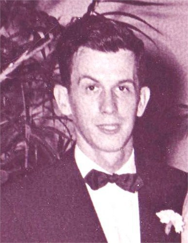
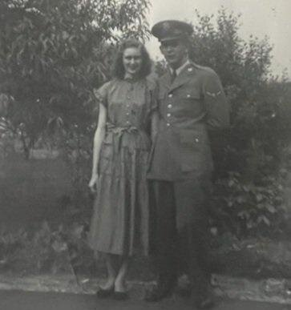
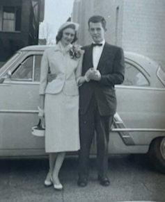
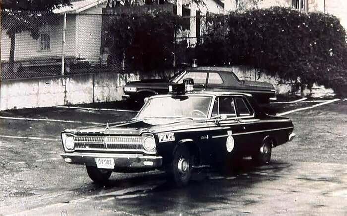
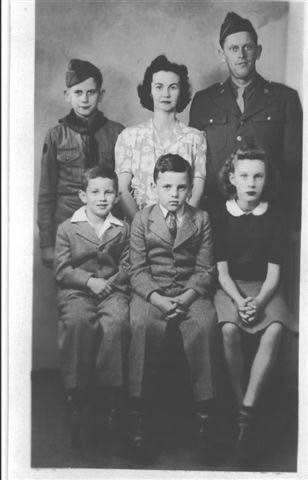
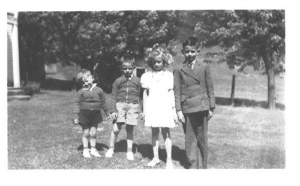
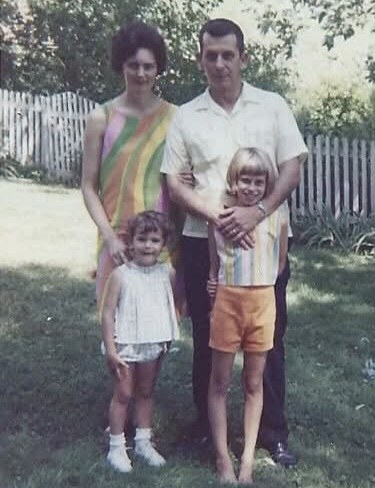
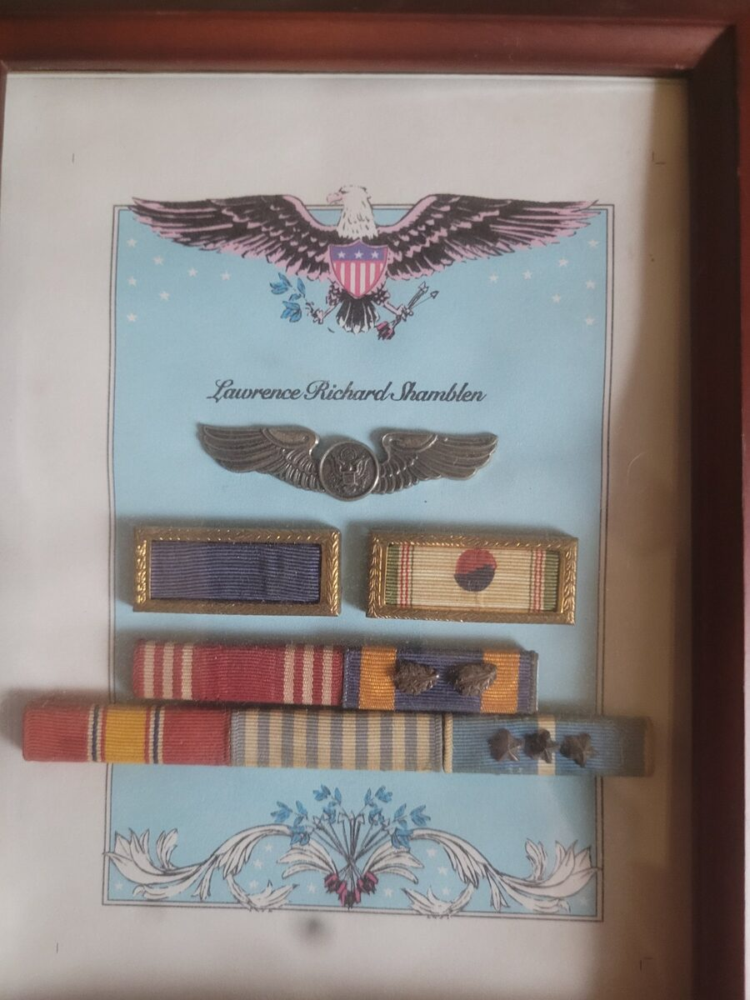
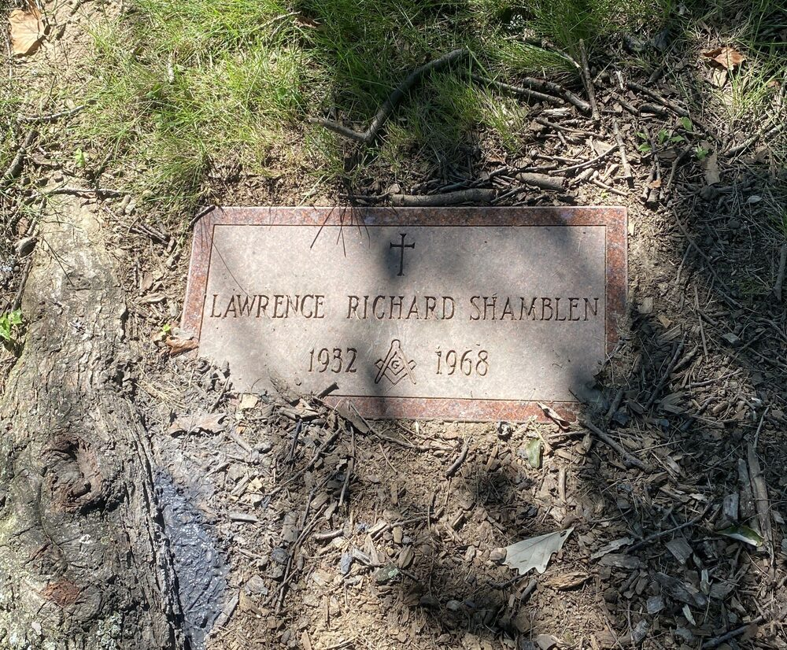

Lawrence Richard Shamblen
4 February 1932 – 3 October 1968
Quick Facts
In a truck crash on the Pennsylvania Turnpike (FAMILY ACCOUNT)
Probation officer; Cincinnati policeman; Roadway truck driver (FAMILY ACCOUNT)
Calvary Baptist, Charleston, as a boy (FAMILY ACCOUNT)
Immediate Family
Additional Quick-Fact Details
- Military: U.S. Air Force, 2 January 1951 – 16 November 1953; Airman Second Class, armorer; served in Korea; Korean Service Medal and United Nations Service Medal (DOCUMENTED)
Air Medal with two oak leaf clusters; aircrew wings (SUPPORTED)
B-26 tail gunner; his plane crash-landed after anti-aircraft fire (FAMILY ACCOUNT) - Memberships: Masonic Lodge (1968 newspaper report; Masonic emblem on his grave marker) (DOCUMENTED)
Spouse
Ruth Laverne McKinney (1932–2018)Children
Susan Ruth Shamblen (b. 25 November 1960, Cincinnati) (FAMILY ACCOUNT)Tricia Marie Shamblen (1965–2016) (SUPPORTED)
From 1976 both girls were also raised by their stepfather, James Thomas "Tom" McGregor, who married Ruth and loved her daughters as if they were his very own blood (FAMILY ACCOUNT)
Siblings
- Betty Carolyn Shircliff (b. 1934)
- Lowell Harold Shamblen (b. 1935)
- Clifford Earl Shamblen (b. 1938)
On Family Tree Sites
Couple Folder
Life Timeline
1932 · age 0
Born 4 February 1932, Fairplain, Jackson Co., WV (DOCUMENTED)
1935 · age 3
Living at Kenna, Jackson Co., WV (DOCUMENTED)
1940 · age 8
In the Ripley district, Jackson Co., WV, in second grade, the eldest of four children (DOCUMENTED)
1949 · age 17
Stonewall Jackson High School, Charleston, WV (SUPPORTED)
1950 · age 18
In his parents' household, Charleston, WV (DOCUMENTED)
c. 1948–1949 · age 16–17
Met Ruth Laverne McKinney at the Baptist youth camp on Tyler Mountain, West Virginia (FAMILY ACCOUNT)
c. 1950 · age 18
Attended Coyne Electrical Institute, Chicago, Illinois (FAMILY ACCOUNT)
1951 · age 18
Enlisted in the U.S. Air Force, Charleston, WV, 2 January 1951 (DOCUMENTED)
c. 1952–1953 · age 20–21
Served about a year overseas in the Korean War; Korean Service Medal and UN Service Medal (DOCUMENTED)
Flew as enlisted aircrew; Air Medal with two oak leaf clusters (SUPPORTED)
B-26 tail gunner; crash landing after anti-aircraft fire (FAMILY ACCOUNT)
1953 · age 21
Separated from the Air Force as Airman Second Class (armorer), Langley AFB, Virginia, 16 November 1953 (DOCUMENTED)
1955 · age 23
Married Ruth Laverne McKinney, 2 July 1955, East Bank, Kanawha Co., WV, by Rev. W. M. McKinney (DOCUMENTED)
1955–1968 · age 23–36
Probation officer, policeman, then Roadway driver, Cincinnati, Ohio; he left the police for trucking after his partner was shot and killed (FAMILY ACCOUNT)
1960 · age 28
Daughter Susan Ruth born, 25 November 1960, Cincinnati (FAMILY ACCOUNT)
1960s · age 28–36
Owned an apartment building in Bond Hill, Cincinnati, when Susan was born; a couple of years later bought a house in Roselawn, where the girls grew up (FAMILY ACCOUNT)
1965 · age 33
Daughter Tricia Marie born (SUPPORTED)
1968 · age 36
Died 3 October 1968, near Mount Pleasant, Westmoreland Co., PA (DOCUMENTED)
Killed in a truck crash on the Pennsylvania Turnpike (FAMILY ACCOUNT)
1968 · age 36
Buried 5 October 1968, Spring Grove Cemetery, Cincinnati (DOCUMENTED)
Life Story
Lawrence Richard Shamblen, called Richard by his family, was born February 4, 1932, in Fairplain, Jackson County, West Virginia, farm country folded between the hills, in the hardest year of the Great Depression. He was the eldest of the four children of Arvel Lawrence Shamblin, a carpenter and DuPont millwright, and Georgia Mae Fisher, who kept the family at Calvary Baptist Church every Sunday.
He met Ruth Laverne McKinney at a Baptist youth camp on Tyler Mountain, West Virginia. After a try at Coyne Electrical Institute in Chicago, he joined the Air Force during the Korean War and flew as a tail gunner on a B-26 bomber. His plane was hit by anti-aircraft fire and crash-landed; he was hurt but recovered.
Richard and Ruth married on July 2, 1955, at East Bank, West Virginia, and made their home in Cincinnati, where he worked as a probation officer, then a policeman, and finally a long-haul driver for Roadway. In his police years there were still stockyards downtown; one night his unit was sent to find a cow that had escaped, and when they found it, it stepped on Richard's foot and would not move. His foot hurt for weeks. He left the police after his partner was shot and killed, wanting a safer job, and became a Roadway truck driver. He was a member of the Masonic Lodge and of Kenwood Baptist Church in Cincinnati.
When their first daughter, Susan Ruth, was born in 1960, Richard and Ruth owned an apartment building in Bond Hill. A couple of years later they sold it and bought a house on Blackstone Place in Roselawn, the house the girls grew up in, with a big field behind it and a basement with a storage room (SUPPORTED). Richard and Ruth also sold Bestline cleaning products from home, and dozens of boxes filled that storage room (FAMILY ACCOUNT). Their second daughter, Tricia Marie, followed in 1965. Richard called Susan "Susie Q." Every weekend he was home from the road there was an indoor campout, with bunk beds set up in the basement or sleeping bags spread across the living room floor. He also had his car, a 1957 Chevrolet with a black body and a red roof that he called "the redhead," and he and Susan would go for rides in it.
Several times a year the girls went to Beckley, West Virginia, to the Hurt family homestead, where Ruth's grandfather had built the house beside the railroad tracks and her mother's brother and sister still lived. Aunt Mel, Ruth's aunt, swept and hosed the girls off after their hours of play under the railroad bridge, and Ruth and Aunt Mel took them on day trips to tour a coal mine and the White Sulphur Springs hotel (FAMILY ACCOUNT).
On October 3, 1968, Richard was out on a long-haul run with a driving partner, the two of them taking turns so the rig never stopped. While his partner drove, Richard slept in the berth behind the cab. On the Pennsylvania Turnpike near Mount Pleasant, the other driver fell asleep at the wheel and the truck went off the road. Richard was killed; the other driver jumped clear. He was thirty-six. He was buried at Spring Grove Cemetery in Cincinnati on October 5, 1968, in the same cemetery where Ruth's father had been laid ten years before.
He left Ruth, a widow at thirty-six, and two small daughters. In 1976 Ruth married Tom McGregor, who raised the girls as his own, so Susan and Tricia grew up with two fathers: the one who gave them life and the one who chose them. The grandchildren never knew Richard. He lives for them in the uniform in the photograph, the stories their mothers told, and the name on the stone at Spring Grove: a man who served his country in Korea, wore the uniform of his city, and gave everything he had to his family.
Photo Gallery









Sources and Evidence
- U.S. Air Force Report of Separation (DD-214), Lawrence Richard Shamblen: born 4 Feb 1932, Fairplain, W. Va.; entered service 2 Jan 1951, Charleston, W. Va.; separated 16 Nov 1953, Langley AFB, Va.; Airman Second Class, armorer (46230); 509th Fighter Bomber Squadron; about one year of foreign service; Korean Service Medal and United Nations Service Medal. Recorded in Kanawha County, W. Va., 4 Dec 1953 (military discharge book 39, p. 156) (DOCUMENTED)
- Kanawha County, W. Va., Register of Marriages, pp. 306–307, entry 973: license issued 11 June 1955; Lawrence Richard Shamblen, 23, born Jackson County, married Ruth Laverne McKinney, 22, born Raleigh County, on 2 July 1955 at East Bank, W. Va., by Rev. W. M. McKinney (DOCUMENTED)
- Pennsylvania Death Index, 1906–1975: Lawrence Richard Shamblen, died 3 Oct 1968, Mount Pleasant, Pennsylvania (DOCUMENTED)
- Ohio Deaths, 1908–2007: Shamblen, age 36, married, of Cincinnati; died 3 Oct 1968, out of state; certificate 202439 (DOCUMENTED)
- Spring Grove Cemetery burial card no. 158853: Lawrence Richard Shamblen, born 4 Feb 1932, West Virginia; died 3 Oct 1968, Mt. Pleasant, Pa.; son of Arvil Shamblen and Georgia Fisher; husband of Ruth McKinney; last address Blackstone Place, Cincinnati; buried 5 Oct 1968, Section 114, Lot 109-D (DOCUMENTED)
- Vorhis Funeral Home graves registration card (image on Find a Grave): died 3 Oct 1968, Mount Pleasant, Pa.; buried 5 Oct 1968, Spring Grove; Korean War, U.S. Air Force, enlisted 2 Jan 1951, discharged 16 Nov 1953, rank A/2C (DOCUMENTED)
- "City Couple's Son Killed In Crash," Charleston, W. Va., newspaper, October 1968: died Thursday [3 Oct 1968] in a traffic accident near Mount Pleasant, Pa.; Korean War veteran; member of the Masonic Lodge and the Kenwood Baptist Church, Cincinnati; survived by his parents, his wife Ruth, daughters Susan and Tricia, a sister and two brothers (DOCUMENTED)
- “Funeral of father — Lawrence Richard Shamblen,” The Cincinnati Post, 4 Oct 1968: accessible article text names wife Ruth McKinney Shamblen, daughters Tricia and Susan, brothers Lowell and Clifford, sister Mrs. Betty Hoff, and parents Arvil L. and Georgia Fisher Shambien; states he died suddenly Thursday, 3 Oct 1968, at Mt. Pleasant, Pennsylvania, and gives Roselawn residence. The free preview is truncated at “Friends may call at the Vor—”; remainder/clipping image inaccessible in this pass. (DOCUMENTED visible article text)
- Find a Grave memorial 79038464, Lawrence R Shamblen, 4 Feb 1932 – 3 Oct 1968, Spring Grove Cemetery; grave marker photo by Searchin4u2 ("Lawrence Richard Shamblen, 1932–1968", with Masonic emblem) (DOCUMENTED)
- VA BIRLS Death File: born 4 Feb 1932; Air Force service 2 Jan 1951 – 16 Nov 1953; gives the death date as 2 Oct 1968, the only record with that date (SUPPORTED)
- 1940 U.S. census, Ripley district, Jackson County, W. Va. (ED 18-11, sheet 7A): Richard Shamblen, 8, son of Arvel [Orvil] L. and Georgia F. Shamblen, with Betty, Lowell and Clifford; living at Kenna, Jackson County, in 1935 (DOCUMENTED)
- 1950 U.S. census, Charleston, W. Va.: Richard Shamblen in the household of Arvel L. and Georgia M. Shamblen (DOCUMENTED)
- U.S. School Yearbooks: R. Shamblen, 1949, Stonewall Jackson High School, Charleston, W. Va. (SUPPORTED)
- Social Security Death Index: born 4 Feb 1932; died October 1968 (DOCUMENTED)
- West Virginia Births Index, 1853–1969: Lawrence Richard Shamblen, born 1932, Jackson County (DOCUMENTED)
- Framed medal display held by the family: aircrew wings, Presidential Unit Citation and Korean Presidential Unit Citation, Good Conduct Medal, Air Medal with two oak leaf clusters, National Defense Service Medal, United Nations Service Medal, and Korean Service Medal with three campaign stars (SUPPORTED)
- Couple profile, Lawrence Richard Shamblen × Ruth Laverne McKinney (family accounts, including a family memoir) (FAMILY ACCOUNT)
Grades: (DOCUMENTED) an original record says it · (SUPPORTED) several records point to it · (FAMILY ACCOUNT) the family's own telling · (UNPROVED) a lead, not proved.
Research Notes and Open Questions
- Find the 1968 Pennsylvania death certificate and full Cincinnati Post funeral notice. The 4 Oct 1968 clipping preview confirms the family and death details cited above, but is cut off before funeral-home arrangements; the image is not accessible in this pass.
- Request his Air Force personnel file (NPRC) for Korea missions.
DNA
No DNA matches linked yet.
Family Notes
Have a story, photo, correction or record? Leave a note in Richard's Family Notes doc. We check each note and update this profile.
Profile history: Created 2 November 2026 from the family couple profile and research notes. Updated 7 November 2026 with his Air Force discharge, marriage register, death records, newspaper report, grave marker, portrait and medal display. Life Story, timeline and family notes expanded 7 November 2026 from family accounts.